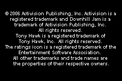

Tony Hawk's Downhill Jam (USA)
EEPROM 4K Save Format Spec gbakit Built-In 💾 MultiBoot
Cartridge Identity
- Game Code
BXSE(FamilyBXS)- Header Title
TONY HAWK'S- Maker / Revision
52/ rev0- ROM Size
- 16.0 MiB (16,777,216 B)
- Save Media
EEPROM 4K- SHA-256
8bbce4c794057ab95f6f4747f25a09b0a49077c0b2bb9f2f183acf7789359119- Engine / SDK Group
comm-005(81 families)
Screenshots


Link Cable & Multiplayer Communications
This title contains detected communication capabilities: 💾 MultiBoot.
Detailed protocol specifications, SIO registers, Joybus commands, and MultiBoot sequences are documented in the Link & Multiplayer Reference.
- Single-Cart MultiBoot
- Single-Cartridge MultiBoot (Download Play) client/server handler · Thumb SWI 0x25 (
0xDF25):0x7f62c0,0x814ec8,0x817aae,0x82eb3a
Battery Save Format Specification
Open Full Save Format SpecDownload save-format.json
- Specification Coverage
- 3 mapped fields · 0 verified checksum(s) · Confidence: HIGH
- gbakit Built-In Support
- Built-in (BXSE)
gbakit save verify BXSE save.sav
gbakit save decode BXSE save.sav
gbakit save fix BXSE damaged.sav -o repaired.savObserved Battery Save Layout
- Fill Byte & Active Size
0x00fill · 14–14 / 512 B active (entropy 1.20 bits/B)- Active Offset Ranges
0x78,0x87–0x88,0x8A,0x96,0x118,0x11A,0x126,0x1A8, +4 more (12 total)- ASCII Magic / Headers
- None detected
- Observed Variable Regions
- 0 bytes across 0 spans: None
- Candidate Checksum/Counter Spans
- None
ROM Assets, Compression & Audio
- BIOS Compression
- LZ77 (
0x10): 3 streams · RLE (0x30): 0 streams - ROM Pointer Tables
- 8 tables (0 pointing to validated compressed streams)
- SDK Backup Tags
EEPROM_V124
Text, Fonts & Scene Data
- Primary Text Encoding
- Plain ASCII (uncompressed) (
831ASCII strings ·1Shift-JIS runs) - Font & VWF Indicators
- VWF Width Table 1bpp Font · BIOS SWIs: BitUnPack
0x10:0· LZ770x11/12:0· Huffman0x13:1· RLE0x14/15:0 - Scene & Packaging
7ROM pointer tables (≥32 entries,1≥200) ·52relativeu32TOCs ·417OAM metasprite hits · FourCC:GAX2
Hardware MMIO Subsystems
ppu_display0x80037fc,0x8003844,0x8013afc,0x801d0cc
Regional Variants & Revisions (Family BXS)
- Tony Hawk's Downhill Jam (Europe) (En,Fr,De,Es,It) (
BXSP, 16 MiB)